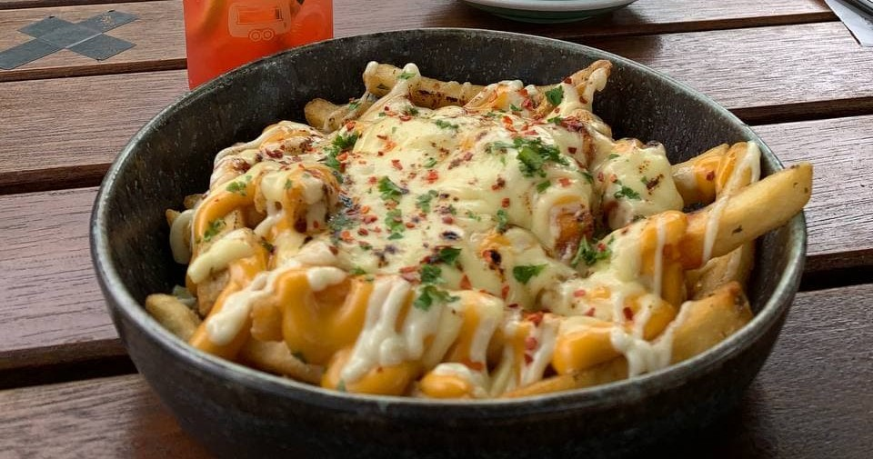

Cheesy Fries
ingredients
For the Cheesy Fries:
- 900 grams of frozen french fries
- 1 cup of shredded cheddar cheese
- 1 cup of shredded mozzarella cheese
- 1/2 cup of bacon bits
- 1/4 cup of sliced green onions
- 1/2 cup of ranch dressing
- oil
- parsley
How i make them
Cooking Instructions (Fries) :
- Preheat oil to 180°C. Carefully place the fries into the oil.
- Fry for about 3 - 4 minutes or until light golden colour.
- Remove the fries from the oil and place it on a kitchen paper to remove excess oil.
- Season the fries with salt.
Cooking Instructions (Melting Cheese) :
- Preheat oven to 80°C.
- Place the fries on a pan and sprinkle the cheddar and mozzarella on it.
- Bake the fries and cheese in the oven for 5 minutes or until the cheese is melted
- Remove the pan from the oven and sprinkle bacon bits, green onions and parsley over the fries.
- Serve it with some ranch dressing on the side or drizzle it directly on the fries.